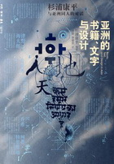
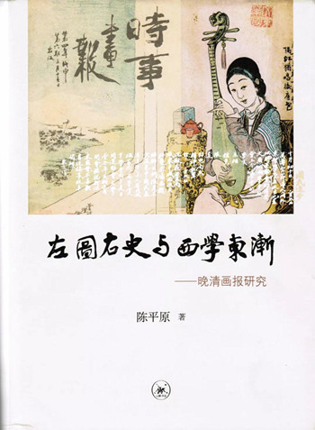
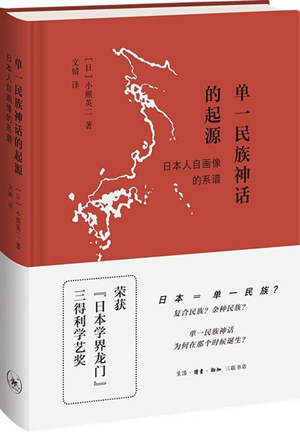
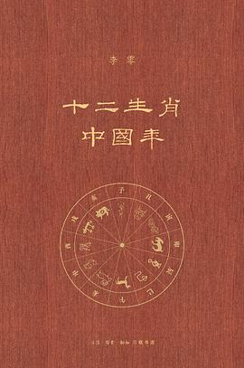
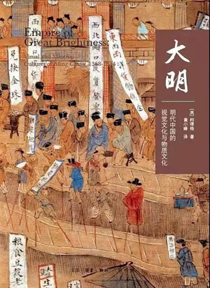

《读书》
一本以书为中心的思想文化评论刊物，凡是书及与书有关的人、事、现象，都是《读书》关注的范围，内容涉及重要的文化现象和社会思潮，包容文史哲，以及建筑、美术、影视、舞台等艺术评论和部分自然科学。创刊于1979年4月，中国思想解放的积极推动者，以引领思潮而闻名中外。


地址：中国北京美术馆东街22号（100010）
总机：8610-64001122
购书：010-84010542 / 84010541

图说敦煌二五四窟
[中国大陆]陈海涛 陈琦
2021-06-30
￥96.00
梦想的诗学
刘自强
1996-06-01
￥15.00
从卡夫卡到昆德拉
吴晓东
2012-11-07
￥39.60
与鲁迅相遇
钱理群
2012-11-07
￥29.00
从文人之文到学者之文
陈平原
2009-04-21
￥25.00
人类学家的魔法
[美] 斯道金
2019-01-28
￥68.00
美国社会科学的起源
[美] 罗斯
2018-10-22
￥78.00
马基雅维里与共和主义
[英] 斯金纳
2019-06-03
￥56.00
神学与科学的想象
[美] 阿摩斯•冯肯斯坦
2019-09-17
￥72.00
比亚兹莱在中国
陈子善
2019-05-06
￥49.00

窥视日本
妹尾河童
2013-09-29
￥15.00
国家与祭祀
[日]子安宣邦
2019-03-04
￥38.00
向开国领袖学习工作方法
金冲及
2021-03-29
￥28.00
我们的中国
李零
2020-12-30
￥298.00
日俄战争：起源与开战
和田春树
2018-12-24
￥148.00
无悔
陈明忠
2016-08-23
￥48.00
了不起的文明现场
[中国大陆]李零
2021-04-13
￥88.00

1944：龙陵会战
余戈
2018-04-19
￥98.00
海昏侯刘贺
[中国大陆]辛德勇
2017-06-21
￥49.00
大时间
余世存
2021-03-10
￥68.00
王道剑
上官鼎
2014-07-31
￥129.00
波斯笔记（上下）
李零
2020-06-24
￥298.00
万变：李零考古艺术史文集
李零
2017-03-06
￥128.00
图说日本美术史
辻惟雄
2021-03-26
￥112.00
一本以书为中心的思想文化评论刊物，凡是书及与书有关的人、事、现象，都是《读书》关注的范围，内容涉及重要的文化现象和社会思潮，包容文史哲，以及建筑、美术、影视、舞台等艺术评论和部分自然科学。创刊于1979年4月，中国思想解放的积极推动者，以引领思潮而闻名中外。
一本杂志和他倡导的生活
做新时代发展进程中的忠实纪录者
以敏锐姿态反馈新时代、新观念、新潮流
以鲜明个性讨论新热点、新人类、新生活
智识生活杂志，关注一些恒久的事情——理性进步，智识生活的乐趣，美。每期有固定篇幅介绍科技发展，有相当的栏目介绍艺术史、电影、文学、建筑、音乐、旅行等；以社会科学为主，以自然科学为辅。
推开古典音乐的情感之门，揭开古典音乐的神秘面纱， 感受人类最伟大的情感。与读者一起，在聆听中享受，诠释，升华。创刊于1993年，深入解析世界著名作曲家及其经典作品。强调实用性与可收藏性，希望通过一本本累计，集成一部丰富的古典音乐百科全书。
敦煌莫高窟被誉为人类文化艺术的宝库，这里保存了自北凉到元代（4—14世纪）绵延一千余年的石窟艺术，中华、印度、希腊、伊斯兰等几大文明在此交融碰撞，历代虔诚的僧侣、供养人与匠师团队为它倾尽心血。漫长的时间、广阔的空间与善巧的心灵共同作用，形成了这座集壁画、彩塑、石窟建筑于一体的文化艺术殿堂。
￥96.00
巴什拉一贯将梦想和诗的意境渗透于思想中，在本书中他进一步将现象学方法引用到想象及诗学中来。他强调想象和形象的认识论价值，认为他们是开拓未来的：任何一次意识领悟都是一次意识的增长，一次光明的增长，一次心理连贯性的加强。
￥15.00回顾20世纪文学，冠以经典的盖棺论定或许言之尚早。但吴晓东在北大讲坛上推崇的从卡夫卡到昆德拉这九位小说家，却无疑称得上大师；他在课堂上选作阐释分析对象的九篇作品也已经或终将被证明为不朽。因此，吴晓东对他心仪小说家的独具慧眼的研究、对他欣赏的小说的别有会心的解读，不失为一 种对20世纪现代派文学的回顾和盘点。虽然作者无意经营小说史的架构，但其宏阔视野却有助于我们对百年文学脉络的整体关照和把握，进而领悟已经过去的这个“人类有史以来最复杂的一个世纪”对小说家及小说形式的深层影响，以及为什么20世纪的小说令人感到“阅读不再是一种消遣和享受；阅读已成为严肃的甚至痛苦的仪式”。
￥39.60近二十年来，钱理群的“鲁迅研究”一直是北大选修课的热门节目，一届又一届走进又走出北大校园的学子眷恋的风景。与学院派研究追求感情零度介入相反，他选择全心的激情投入。在感受到生命困和现实困扰之际，他总是回到鲁迅那里探寻答案。而他对鲁迅的读解，也因此超越知识与学术的范畴：他的课堂，是生命与生命的慰藉、心灵和心灵的对话，思想对思想的碰撞。
￥29.00五四新文化运动期间，陈独秀认准“古文”该死、“白话”当活，把古文十八家列为“十八妖魔”。陈平原在北大开设研究生选修课“明清散文十八家”，也算是为五四新文化运动“打扫战场”，呈现当初情急之余，被当作脏水泼掉的“明清之文”的另一侧面。希望借助十八家文章，呈现三百年间（16世纪中叶至19世纪中叶）中国散文发展的大致脉络，并引发大家对这一古老文体的兴趣。
￥25.00本书收录八篇于1974—1991年间发表的人类学史论文，主要关注两位在现代民族志田野工作的发展和人类学学科制度化过程中影响深远的人物：鲍亚士与马林诺斯基，并讲述作为人类学基本方法的田野工作的兴起，及其符码化与神秘化过程。涉及人类学史的几个重要主题：人类学的“浪漫原始主义”；人类学与更大的社会政治场域的关联与冲突；其“科学”志向与获取“素材”的主观方式之间的张力，等等。
￥68.00例外论观点认为，美国基于其共和政府和广泛的经济机遇而在世界历史中占据特殊地位，可以避免欧洲所面临的历史变迁、大规模贫困与阶级冲突等问题。然而，内战经历、迅速的工业化与宗教承诺的衰落带来了一场突如其来的民族危机。美国社会科学的各个学科正是诞生于这场危机，其发展正体现了保留例外论理想的利益对这种历史变化的逃避和驯化。
￥78.00在现代历史之初，意大利城邦共和国的经验为古典政治观的重新流行提供了最有利的基础。自1494年佛罗伦萨美第奇家族统治的衰落至1530年最后一个佛罗伦萨共和国的衰亡期间，共和主义思想得到了最热烈、深入的讨论。而这一时期，几乎正与马基雅维里担任公职、写作政治学著作的时间重合。可以说，马基雅维里的政治思考从一开始就与他在共和国的角色和职责密不可分。
￥56.00敦煌莫高窟被誉为人类文化艺术的宝库，这里保存了自北凉到元代（4—14世纪）绵延一千余年的石窟艺术，中华、印度、希腊、伊斯兰等几大文明在此交融碰撞，历代虔诚的僧侣、供养人与匠师团队为它倾尽心血。漫长的时间、广阔的空间与善巧的心灵共同作用，形成了这座集壁画、彩塑、石窟建筑于一体的文化艺术殿堂。
￥96.00本书编入一九二〇年至今将近一百年内在中国发表的与比亚兹莱有关的各种诗文，以发表时间先后编排，且悉依原貌。全收收录郭沫若、郁达夫、鲁迅、周作人、邵洵美、滕固、梁实秋、叶灵凤、唐弢、姜德明、李欧梵、董桥等25位中国现当代作家、艺术家关于比亚兹莱及其艺术评述的35篇文章，如一位作者入选作品不止一篇，则合并排列，依先发表者为准。
￥49.00虽然河童这一次将目光聚焦于自己的祖国日本， 但其好奇心却分毫未减， 从神秘的皇居到明治时代的监狱， 从刺青文身到作为时代新事物的红黑帐篷，从深埋于京都地铁下的遗迹挖掘现场到东京地方法院法庭……专注而勤奋的河童边走、边问、边画， 将这些文字和素描连同它们所带有的几十年前的印记定格于此， 我们也因此多了一个认识日本的角度。
￥15.00
在本书中，子安宣邦“作为思想史家”在日本思想史脉络之中展开了对日本政治神学的批判。于是，靖国神社问题被追溯到作为“天皇制国家日本之大祠”的伊势神宫；战后由美国引导制定的、规定着和平宪法政教分离原则的《神道指令》，也被置于与“历史再认识论”的关联之中重新认识。
￥38.00本书收录了国际著名平面设计家、书籍设计家杉浦康平先生近年与中国、韩国及印度的六位著名设计师——吕敬人、黄永松、安尚秀、郑炳圭、R.K.乔希（R.K.Joshi）、柯蒂·特里维迪（Kirti Trivedi），就东方各国的文化异同，亚洲的书籍、文字、设计以及这三者之间的关系所进行的对谈，通过他们的对话使读者得以分享这些设计师们对本国的文化、文字的思考，以及如何将其融入实际设计工作的体会和经验。而书中配合各处对谈内容分别选刊的杉浦康平和六位设计师的作品，也为读者提供了从思想到实践的最佳典范。
￥63.00陈平原最近二十年来东奔西走，努力搜寻资料，尝试借助文字与图像两种不同介质的功能互补和互动，深入拓展他一向关注的近代文学与文化研究。这一有“预流”性质的研究转向，既是回应海外汉学研究的某种趋向，更有中国学界自主推进相关研究的动力。本书就是作者在晚清画报研究方面的集大成之作，通过各自独立但又内在关联的十篇文章，将近代启蒙、新知传播、传教士、女学、科幻小说等诸多内容，配以三百多幅图片，生动再现了晚清画报缤纷的面目。而书中兼及新闻史、绘画史与文化史的论述，尤其关注图文之间的缝隙，对读者深刻了解晚清社会风尚、文化思潮以及审美趣味的复杂性，会有极大的帮助。
￥88.00《单一民族神话的起源：日本人自画像的系谱》围绕“日本到底是多民族国家还是单一民族国家”的问题，从其源头（19世纪后期）开始梳理，胪列了各个历史时期重要学者的主要观点和社会主流思潮，使读者对该问题的发展过程及其历史原因有较为清晰的理解。
￥68.00在中国革命和建设时期，毛泽东、周恩来、朱德、刘少奇、陈云、邓小平等领导人在实际工作中积累了宝贵的工作方法，在不同时期发挥了重要的作用。这些工作方法的价值并不因时间的流逝和条件的改变而失去作用，今天我们应该在新的历史条件下充分地挖掘它、继承它、使用它、发展它，以加快推进中华民族的伟大复兴事业的进程，学习的同时也是传承老一辈无产阶级革命家优良传统的最好方式，让它们在我们的实际工作中发挥更大的作用，在当前形势下对我们国家的干部来说这是国情教育的优质读本。
￥28.00北京大学李零教授，历经多年遍访中国上古以来重要的城址、战场、祭祀遗迹等，在旅行日记和考察记的基础上，写作《我们的中国》。书中从禹贡九州，讲到周秦的两次大一统；从寻访孔子和秦始皇、汉武帝的足迹，到中国的山水形胜、岳镇海渎；最后还论述了20世纪中国革命的地理问题。
￥298.00日俄战争是世界史上巨大的事件，它不仅给日本和俄罗斯国民，而且给朝鲜和中国国民都带来了深刻的影响。尽管如此，关于这场战争，建立在对日本和俄罗斯资料进行深入调查基础上的研究几近空白，更遑论兼顾到朝鲜和中国资料的研究。我于2004年日俄战争开战100周年之际开始写作本书，并于2010年——日本合并韩国100周年之时将其出版。书中对中国资料的研究虽然仍显薄弱，但大概可以说是首次在全面调查日本、俄罗斯、韩国资料的基础之上所做的研究吧。
￥148.00地狱般的刑求后，我体悟的是，只要精神不崩溃，肉体上的痛苦是可以忍受的。我想起张伯哲面对死亡时的从容，想起他所说的：“朝闻道夕死可矣。”
￥48.00世人言及中国历史，必曰“上下五千年”。20世纪中国考古学的充分发现，不仅充分证明了“中华上下五千年”，还呈现了另一种与典籍里的中国相似而有不同的华夏。得益于考古学的襄助，现在所能见到的中华文明景观，得到史无前例的丰富，更加精彩、蔚为大观，甚至改变了世界对中华文明的基本看法。
￥88.00叙述的是1944年滇西抗日反攻主战场的战事——中国远征军的龙陵会战，及其后收复芒市、遮放、畹町，与反攻缅北的中国驻印军会师芒友、打通中印公路的全过程。全书中心在远征军以重兵三战龙陵，其间还粉碎了日军“断”作战攻势，终于以硬碰硬的攻坚方式攻克龙陵古城，创造了抗战史上中国军队以大兵团及空前规模的步炮空协同，实施攻坚作战并赢得完全胜利的全新战例。
￥98.00
本书是第一部有关海昏侯及其时代的学术研究专著。作者以文献记载的刘贺生平为基础，结合出土文物，将汉武帝晚年至汉宣帝时期的诸多重大历史事件详细解说；通过分析刘贺的经历与行事，揭示其个人的生活环境与性格特征，认为刘贺的戏剧化人生，既是时代造就，也是性格使然。
￥49.00易经向来被誉为“群经之首”，因其艰涩难懂，解读易经原典者自古以来代不乏人，但是却出现了两种倾向，要么被复杂化，要么被玄学化。这与中国上古曾发生过两次重大的防火墙运动——颛顼“绝天地通”和文王后天卦序的割裂相关。其结果导致普通人无权研究天文地理方面知识的禁区，知识的生产和发布由此被垄断，进而堕入王权本位和伦理本位的系统中轮回
￥68.00从朱元璋杀功臣和暗算明教首脑开始，讲述明教下一代侠客崛起江湖，与锦衣卫和天竺武林绞杀，匡扶中原武林并重建明教的故事。其中重要的环节有靖难之役、建文帝的逃亡、结局，以及郑和下西洋等等。
￥129.00波斯，古代世界的中心，与秦汉并立的强大帝国，中西交流的关键枢纽。继《我们的中国》之后，李零教授用“我们”的眼光审视古代中亚和世界历史，精彩图文再现波斯余晖。
￥298.00北京大学中文系教授李零先生最新的论文选集，主要围绕作者关注的考古与艺术史领域，收入2008—2014年发表的文章22篇，涉及古代器物、建筑砖瓦、雕刻绘画、艺术中的动物形象等主题。文章内容多由考古遗物、遗迹入手，结合历史学、艺术史与古文献学，考察各类文物的型制与艺术表现手法，或探究其渊源流变，或寻绎外来文化与古代中国文化的交流与相互影响。
￥128.00日本美术通史的里程碑之作，探索自绳纹时代以来直至现代的日本美术发展史，跨越一万数千年；涉及领域从传统的绘画、雕塑到工艺、建筑，包括近代以来的摄影、设计、漫画等，可谓包罗万象；运用近四百帧的彩色图版，深入全面展现日本美术的特质。
￥112.00十二生肖起源于中国，但传播范围甚广，不仅见于中国本土，也见于北亚、东北亚、南亚、东南亚，甚至西传中亚和伊朗，是我国最具世界影响力的文化现象。正像狮子从伊朗东传，石狮子和舞狮在中国落地生根，已经成为中国文化的组成部分。
￥68.00陈平原最近二十年来东奔西走，努力搜寻资料，尝试借助文字与图像两种不同介质的功能互补和互动，深入拓展他一向关注的近代文学与文化研究。这一有“预流”性质的研究转向，既是回应海外汉学研究的某种趋向，更有中国学界自主推进相关研究的动力。本书就是作者在晚清画报研究方面的集大成之作，通过各自独立但又内在关联的十篇文章，将近代启蒙、新知传播、传教士、女学、科幻小说等诸多内容，配以三百多幅图片，生动再现了晚清画报缤纷的面目。而书中兼及新闻史、绘画史与文化史的论述，尤其关注图文之间的缝隙，对读者深刻了解晚清社会风尚、文化思潮以及审美趣味的复杂性，会有极大的帮助。
￥88.00一部具有创新性和可读性的历史读物，通过丰富的图像和实物材料，呈现了中国历史上的一个文化高峰——明朝。它不是按照时间顺序讲述帝王的更迭，没有面面俱到介绍明朝的人物和事件，也没有大轮廓地勾勒明朝的兴衰，而是为现代读者进入明代历史提供了一组新颖的切入点：有关动与止的观念，有关文字书写的位置和特色
￥68.00
地址：中国北京美术馆东街22号 100010 | 电话：8610-64001122
Copyright © 2013 SDX Joint Publishing Company.All rights Reserved
生活·读书·新知三联书店版权所有 | 技术支持：云章科技
ICP备 案 号：京ICP备12011204号-3